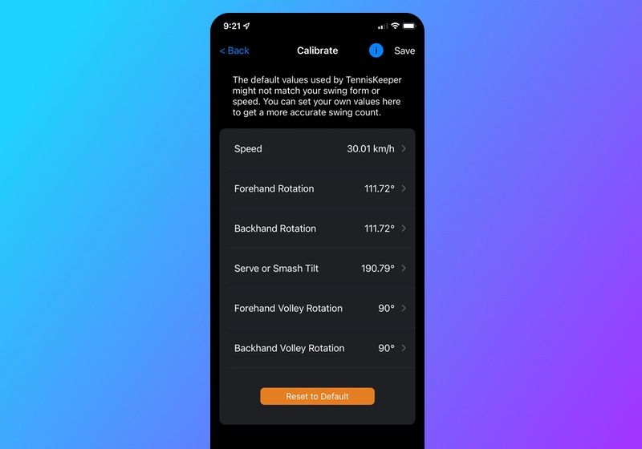
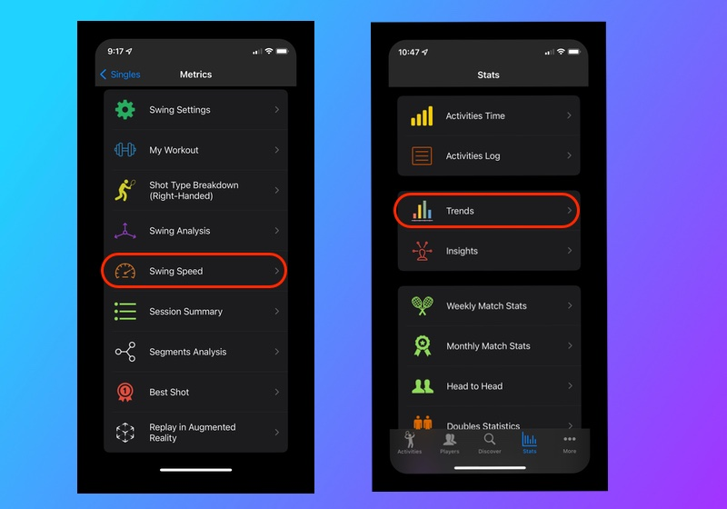
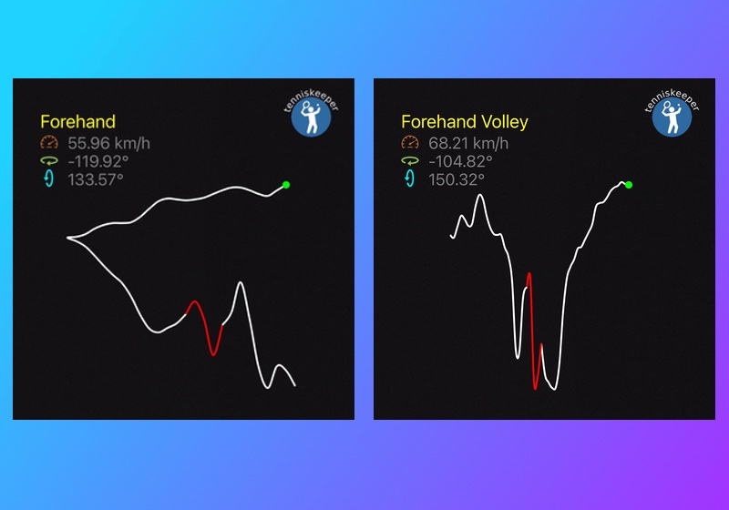
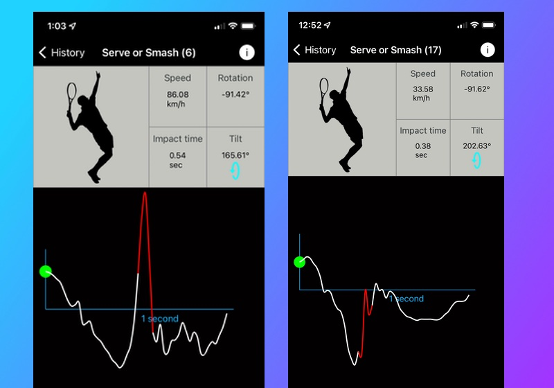

You can calibrate TennisKeeper to improve the accuracy of your swings identification and classification. Make sure you have a good understanding on how swings are detected before you start your calibration.
Default Swing Settings
To review the default swing settings, on your iPhone, go to:
More > Calibrate Swingsto review the default values used by TennisKeeper.  Default Swing Angles
Speed Adjustment
The speed metrics is the simpliest metric to adjust. Your wrist motion will only be counted as a shot if it meets the minimum speed. Go to Metrics > Swing Speed to learn about your swing speed for the session, as well as Stats > Trends to see your speed trends. Then adjust your speed parameter accordingly.
If the speed value is set too low, movement such as picking up a ball may be incorrectly counted as a shot. If the speed value is set too high, you may see fewer number of shots because swings that don't make the threshold will not be counted. Your Swing Speed Trends
Rotation Adjustment
You can also adjust the default rotation angle for your forehands and backhands. If you are not seeing enough forehands, you can try setting the forehand rotation angle to a smaller number. Or you can set the backhand rotation angle to a larger number to ensure you are not picking up false positives from random arm movement.
Your Apple Watch cannot determine if a ball hit the ground or not. Therefore, in this context, a forehand volley is simply a swing with a shorter path (i.e. smaller angles) than a normal forehand. A backhand volley is a swing with a shorter path than a normal backhand. As such:
Make sure your forehand volley angle is smaller than your forehand angle; and your backhand volley angle is smaller than your backhand angle.
To learn more about your rotation, go to Metrics > Swing Analysis for the session.
-
For example, using default Swing Settings, the first shot is classified as a Forehand because its rotation (119.92°)
is bigger than the minimum Forehand rotation (111.72°).
The second shot is classified as a Forehand Volley because its rotation (104.82°) is less than the default Forehand rotation (111.72°) but bigger than the minimum Forehand Volley rotation (90°).  Forehand vs Forehand Volley Rotation Angles for a Right-handed player
Tilt Adjustment
First note that while your Apple Watch can determine your hand orientation (tilt angle), it does not know where you are on the court when such movement is detected. Therefore Serve (baseline location) and Overhead (anywhere on the court) are combined into the same category known as Smash.
Recall a shot is identified as a Smash if there is a rapid hand rising motion or if its tilt angle is bigger than the default settings.
- If you have a standard serve motion (where you bring your arm back and then quickly swing up), it should result in a rapid hand rising motion that can
be detected by your Apple Watch wrist movement as shown in the first diagram.
However if you are not able to achieve such a serve motion, you can analyze the tilt angles of your shot and adjust the Tilt value in your Swing settings. In the second diagram, the Tilt angle (202.63°) is bigger than the default Tilt angle (190.79°) so it is also classified as a Smash.  Smash Detection - Rapid Hand Rising vs Tilt Angles
One more Thing
If you have a consistent Smash that can be identified by a rapid hand rising movement, then you don't need to (or want to) use the Tilt angle at all for Smash detection.
This is especially true for players where the second diagram is actually a big swinging forehand volley! If that is the case for you, you can change the tilt angle to be much larger so that it won't identify this shot as a Smash. And then this will fall into the Forehand Volley rule because of the rotation (91.62°).